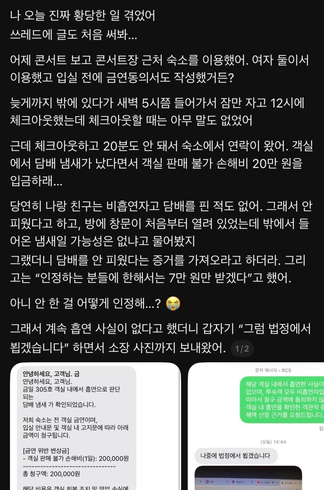
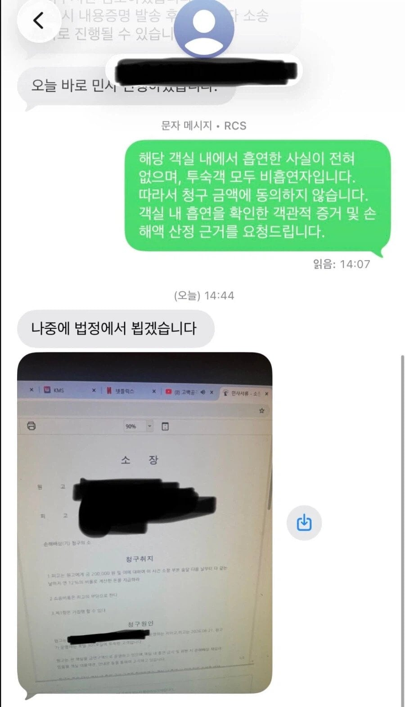
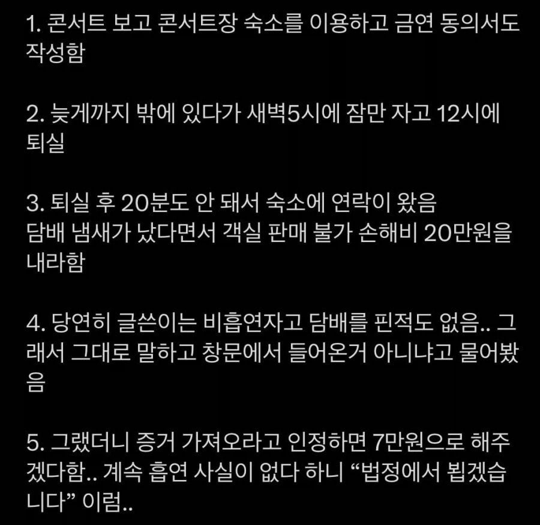

무죄추정의 원칙 ㅇㄷ?



무죄추정의 원칙 ㅇㄷ?
진짜 멍청한애들 많음ㅋㅋㅋㅋㅋㅋㅋ 법정도 경찰서도 안갔는데 무죄추정 ㅋㅋㅋㅋㅋㅋㅋㅋㅋ
결과도 나온 사건이잖아 이건. 결과도 올려야지;;
어케됐음???
사건반장인가 방송도 타고 죄송합니다 결말. 욕은 욕대로 처먹음.
이거 니코틴검사에서 비흡연자 구분될건데 무슨 깡일까?
증거는 지가 제시 해야지ㅋㅋㅋㅋㅋ병신인가ㅋㅋㅋㅋㅋㅋㅋ
무죄추정 이러고있네
안 될 거 알면서 한 놈만 걸려라 ㅇㅈㄹ 하는 거지
숙소 cctv달려있는거 아니냐?
그냥 보건소에서 니코틴 일산화탄소 검사받기로 약속하고 검출 안될시 개인당 100만원씩 배상하는 계약서 쓰자고하면 될듯?
부존재의증명을 ㅋㅋㅋ
오히려 소장 접수되면 숙소가 먼저 고객이 담배를 폈다는걸 증명해야하는걸로 아는데 (고객이 담배를 안폈다는 증거를 제시하는게 아니고)
저럴땐 비흡연자를 실내에서담배빵치는무개념씹좆흡연자로 몰았으니 모욕죄로 걸 수 있지 않겠냐?
그나저나 저기 어디 모텔이냐?
보건소에서 니코틴검사 하면됨ㅋㅋ

무죄추정은 형사재판에서 쓰는거고;;
무슨 민사에서 무죄추정을 말하고 있어 ㅋㅋㅋㅋ